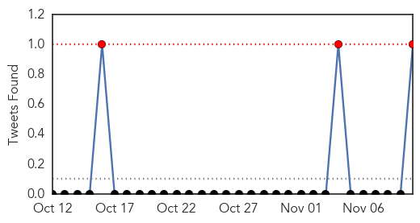
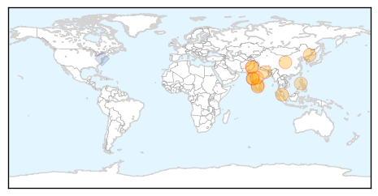
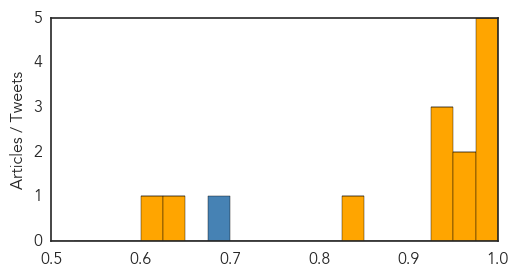
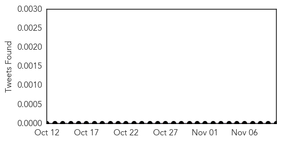

Dengue Fever
30-Day Web Trend
0 alerts, 0 warnings
30-Day Twitter Trend
3 alerts, 0 warnings

Article Locations
Article Confidences
Top Articles:
- 0.997
- Dealing With Dengue -- Beijing Review
- 0.991
- Dengue’s spread flies under the radar amid Ebola scare
- 0.989
- Dengue fever is 'fastest-growing global health threat' but eclipsed by Ebola
- 0.982
- Understanding and caring for dengue fever in kids!
- 0.976
- 44 more dengue cases reported
- 0.961
- Underreporting dengue endangers India
- 0.952
- Drop in temperature level will reduce dengue cases: BMC
- 0.947
- Battling dengue: Marked decrease recorded in dengue patients
- 0.947
- Northern Voices Online Dengue becoming Epidemic in Delhi, NCR
- 0.929
- Concern over dengue kits
- 0.846
- Health And Family, Lifestyle Features, The Philippine Star
- 0.643
- Haemophilic teenager from Mumbai saved from fatal sting of dengue
- 0.606
- ‘25 KEM doctors, students laid low by dengue’
Top Tweets:
- 0.882
- .@PLOSNTDs reviews dengue epidemiology in 7 nations; Increasing rates of Ebola in Sierra Leone. HealthSecurity http://t.co/H1JhGDbj22
- 0.624
- Flavivirus news: Dengue cases soar in September-October: NIV - Times of India: Dengue cases soa... http://t.co/Nt93nWbcEi pathogenposse
Pertussis
30-Day Web Trend
0 alerts, 0 warnings
30-Day Twitter Trend
0 alerts, 0 warnings

Article Locations
Article Confidences

Top Articles:
Top Tweets:
-
No tweets found for Nov 10, 2014